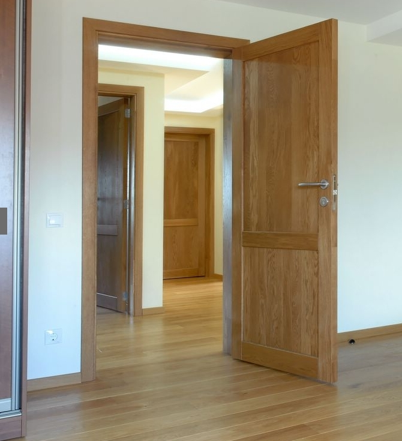
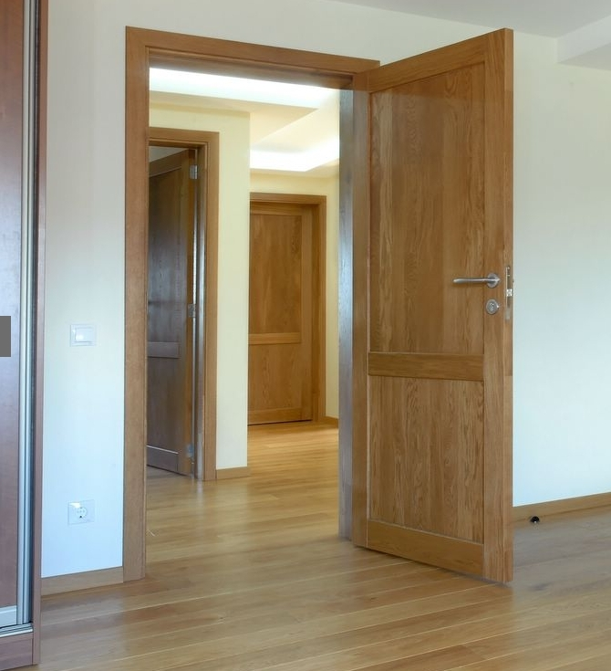

Pigios vidaus durys Vilniuje
2020.10.27 07:13

Susisiekite su mumis:
+370 652 31133
+370 642 16168
info@geriausiosdurys.lt
Nauja parduotuve! PC Pas Juozapą
Laisvės pr. 125, Vilnius Vidaus durys Pušinės durys Ekofaneruotės durys Ekofaneruotės durys Šale MDF durys Alksnio durys Ąžuolinės durys HI-TECH Medžio masyvo durys Uosio durys [informacija ruošiama] Faneruotos durys Laminuotos durys [Informacija ruošiama] Durų furnitūra Rankenos Spynos Vyriai Lauko durys Seifinės durys Šarvuotos durys Plieninės durys Langai Balkonų stiklinimas Plastikiniai langai Akcijos Apie mus Kontaktai Vidaus durys Aukštos kokybės, stilingos ir tvirtos vidaus durys iš a href="/prekes/vidaus-durys/hi-tech-medzio-masyvo-durys/" medžio masyvo /a , faneruotos ir laminuotos durys. MDF durys dažytos emaliniais dažais, įpatingai ilgaamžės. Priklausomai nuo konkrečių pirkėjų poreikių, siūlome įvairių spalvų ir skirtingų faktūrų duris, derančias prie pasirinkto interjero. Daugelis modelių gali būti įstiklinti arba aklini (konstrukcijos be stiklo). Vidaus durų gamybai naudojamos kokybiškos medžiagos ir modernūs technologiniai sprendimai, užtikrinantys patikimą durų eksploataciją ir ilgaamžiškumą. Siūlome platų vidaus durų pasirinkimą, garantuojame optimalų kainos ir kokybės santykį. Daugiau informacijos Durų furnitūra Kokybiška durų furnitūra, rankenos, spynos, vyriai ir kiti durų priedai. Siūlome įvairių gamintojų durų priedus, išsiskiriančius aukšta kokybe ir ilgaamžiškumu. Platus durų furnitūros ir priedų pasirinkimas leidžia įgyvendinti pasirinkto interjero viziją, realizuoti tiek klasikinio, tiek modernaus būsto sprendimus. Tvirtos gamybos medžiagos užtikrina patikimą rankenų, spynų ir virių eksploataciją. Ilgametę darbo patirtį turintys konsultantai atsakys į visus jūsų klausimus, suteiks profesionalią pagalbą ir padės priimti racionaliausius sprendimus konkrečioje situacijoje. Daugiau informacijos Lauko durys Stilingos ir tvirtos plieninės, šarvuotos ir medžio masyvo lauko durys, užtikrinančios aukštus saugumo, šilumos ir garso izoliacijos rodiklius. Siūlome itin didelį lauko durų pasirinkimą, atitinkantį tiek klasikinio, tiek modernaus būsto viziją. Durų gamybai naudojame patvarias ir kokybiškas medžiagas, užtikrinančias patikimą ir ilgalaikę eksploataciją. Atsižvelgdami į klientų pageidavimus, greitai ir kokybiškai gaminame individualaus užsakymo duris. Pirkėjai gali rinktis iš plačios lauko durų dizaino ir spalvų pasiūlos. Garantuojame optimalų kainos ir kokybės santykį. Daugiau informacijos Langai Greitai ir kokybiškai įvykdysime medinių ir plastikinių langų užsakymą. Daugiau informacijos Specialūs pasiūlymai Ekofaneruotės durys Šale F114 Akcija! Varčia su stakta 75mm.
Kaina - 82.00€ Daugiau informacijos Ekofaneruotės durys Šale F113 Akcija! Varčia su stakta 75mm.
Kaina - 82.00€ Daugiau informacijos Ekofaneruotės durys F113 Akcija! Varčia su stakta 75mm.
Kaina - 95.00€ Daugiau informacijos Ekofaneruotės durys Šale 111 Akcija! Varčia su stakta 75mm.
Kaina - 77.00 € Daugiau informacijos Ekofaneruotės durys F114 Akcija! Varčia su stakta 75mm.
Kaina - 95.00€ Daugiau informacijos Ekofaneruotės durys F225 Akcija! Varčia su stakta 75mm.
Kaina - 140.00€ Daugiau informacijos Ekofaneruotės durys Šale 112 Akcija! Varčia su stakta 75mm.
Kaina - 77.00 € Daugiau informacijos Ekofaneruotės durys Šale 223 Akcija! Varčia su stakta 75mm.
Kaina - 77.00 € Daugiau informacijos Ekofaneruotės durys F120 Akcija! Varčia su stakta 75mm.
Kaina - 109.00€ Daugiau informacijos Ekofaneruotės durys F222 Akcija! Varčia su stakta 75mm.
Kaina - 99.00€ Daugiau informacijos Ekofaneruotės durys F300 Akcija! Varčia su stakta 75mm.
Kaina - 99.00€ Daugiau informacijos Ekofaneruotės durys F425 Akcija! Varčia su stakta 75mm.
Kaina - 99.00€ Daugiau informacijos Ekofaneruotės durys F603 Akcija! Varčia su stakta 75mm.
Kaina - 99.00€ Daugiau informacijos Ąžuolinės durys aklinos (D13) Akcija! Akcijos metu kaina tik
245.00 € Daugiau informacijos Ąžuolinės durys stiklintos (D13-1) Akcija! Akcijos metu kaina tik
245.00 € Daugiau informacijos Pušinės durys aklinos (M7) Akcija! Akcijos metu kaina tik 72.00€ Daugiau informacijos Pušinės durys stiklintos (M7-1) Akcija! Akcijos metu kaina tik 72.00€
Daugiau informacijos Pušinės durys stiklintos (M7-2) Akcija! Akcijos metu kaina tik 72.00€ Daugiau informacijos Pušinės durys aklinos (šakotos) (M7B) Akcija! Akcijos metu kaina tik 69.00€ Daugiau informacijos Pušinės durys stiklintos (šakotos) (M7-1B) Akcija! Akcijos metu kaina tik 69.00€ Daugiau informacijos
Prekės
Vidaus durys Lauko durys Durų furnitūra LangaiVidaus durys
Pušinės durys Ekofaneruotės durys Ekofaneruotės durys Šale Ąžuolinės durys Alksnio durys Uosio durys [informacija ruošiama] Faneruotos durys Laminuotos durys [Informacija ruošiama]Lauko durys
Seifinės durys Šarvuotos durys Plieninės durysKontaktai
UAB "Geriausios durys"Laisvės pr. 125, LT-06118, Vilnius
Kalvarijų g. 57 B, LT-09317 Vilnius
Mob. tel.: +370 652 31133
Tel.: (8~5) 272 3483
Faks.: (8~5) 272 3483
El. paštas: info@geriausiosdurys.lt Siekiant pagerinti Jūsų naršymo kokybę, vidinės statistikos bei tiesioginės rinkodaros tikslu šioje svetainėje yra naudojami slapukai („cookies“), kuriuos Jūs galite bet kada išjungti . SUTINKU Privatumo politika
- VIP Durys | Vidaus durys, pardavimas, pristatymas, montavimas
- Aukščiausios kokybės Medinės durys, Ąžuolinės durys ...
- Modernios durys - Stepmaster
- Reisvita - Durys namui
- Vidaus Durys - Vilniuje, Kaune, Klaipėdoje | Kambariodurys.lt
- Medinės lauko durys - Kazliškės - medinės durys ...
- VIDAUS durys | DURŲ PASAULIS
- Pagrindinis - Faneruotos vidaus durys kaune - Pigios geros ...
- Durys | Hörmann durų programa stabilioms statyboms
- Įvairių durų gamyba ir prekyba | Šiauliai | Arjitas
- VIP Durys | Vidaus durys, pardavimas, pristatymas, montavimas
Kokybiškos vidaus durys už gerą kainą. Didelis pasirinkimas, akcijos ir nuolaidos.
- Aukščiausios kokybės Medinės durys, Ąžuolinės durys ...
Šiltos ir puošnios lauko durys Jūsų namams. Kokybiškos vidaus durys. Kambario durys puikiai tiks Jūsų interjerui.
- Modernios durys - Stepmaster
Susisiekite su mumis. Telefonas: +37061709939 El. paštas: durys.durytes@gmail.com. 0 .
- Reisvita - Durys namui
Medinės durys pardavinėjamos tiek natūralios, tiek jau dažytos (beicuotos) įvairiomis spalvomis. Faneruotos durys – karkasas gaminamas iš klijuotos medienos, abi pusės dengiamos medžio drožlių plokščių sluoksniais, o paviršius padengtas natūralia ar „fine line“ faneruote. Laminuotos durys puikiai dera prie šiuolaikinio ...
- Vidaus Durys - Vilniuje, Kaune, Klaipėdoje | Kambariodurys.lt
VIP durys – kokybiškų vidaus durų pardavimas ir montavimas. Esame Baltarusijos durų gamintojo atstovai Lietuvoje. Gamintojas specializuojasi kurdamas duris, tinkančias moderniame ir klasikiniame interjere. Dėmesingai sekdami naujų stilių ir modernaus dizaino kaitą, kiekvienais metais pristatome naujus aktualius durų modelius ...
- Medinės lauko durys - Kazliškės - medinės durys ...
Apsauginės durys rūsiui arba įėjimui į garažą, ugnį sulaikančios durys katilinėms arba daugiafunkcinės durys dirbtuvėms – mūsų aukštos kokybės plieno durys pasirūpins, kad tarp savo namų sienų jaustumėtes patogiai ir saugiai. apie funkcines duris jūsų namams.
- VIDAUS durys | DURŲ PASAULIS
Aukščiausios kokybės Medinės durys, Ąžuolinės durys, Pušinės durys, Laminuotos durys, Faneruotos durys, Lauko durys Pagamintos Lietuvoje Už patrauklią kainą
- Pagrindinis - Faneruotos vidaus durys kaune - Pigios geros ...
Kambario durys turi būti ne tik tvirtos, bet ir gražios, puošnios. Tam jos yra dengiamos ekofaneruote. Toks durų padengimo būdas yra pakankamai stiprus ir tampa itin tikroviška medžio imitacija.
- Durys | Hörmann durų programa stabilioms statyboms
Medinės lauko durys - specialiai apšiltintos ir impregnuotos, Lietuviškai žiemai ir vasarai pritaikytos medienos masyvo durys. Apsauga. Labai svarbu, kad projektuojant namą medinės lauko durys būtų apsaugomos nuo tiesioginių saulės spindulių ir nuo tiesioginio lietaus.
- Įvairių durų gamyba ir prekyba | Šiauliai | Arjitas
Šarvuotos durys, vidaus durys, lauko durys, metalinės laiptinių durys, plastikinės lauko durys. Gamyba ir prekyba. Šiauliai
Kokybiškos vidaus durys už gerą kainą. Didelis pasirinkimas, akcijos ir nuolaidos.
Šiltos ir puošnios lauko durys Jūsų namams. Kokybiškos vidaus durys. Kambario durys puikiai tiks Jūsų interjerui.
Susisiekite su mumis. Telefonas: +37061709939 El. paštas: durys.durytes@gmail.com. 0 .
Medinės durys pardavinėjamos tiek natūralios, tiek jau dažytos (beicuotos) įvairiomis spalvomis. Faneruotos durys – karkasas gaminamas iš klijuotos medienos, abi pusės dengiamos medžio drožlių plokščių sluoksniais, o paviršius padengtas natūralia ar „fine line“ faneruote. Laminuotos durys puikiai dera prie šiuolaikinio ...
VIP durys – kokybiškų vidaus durų pardavimas ir montavimas. Esame Baltarusijos durų gamintojo atstovai Lietuvoje. Gamintojas specializuojasi kurdamas duris, tinkančias moderniame ir klasikiniame interjere. Dėmesingai sekdami naujų stilių ir modernaus dizaino kaitą, kiekvienais metais pristatome naujus aktualius durų modelius ...
Apsauginės durys rūsiui arba įėjimui į garažą, ugnį sulaikančios durys katilinėms arba daugiafunkcinės durys dirbtuvėms – mūsų aukštos kokybės plieno durys pasirūpins, kad tarp savo namų sienų jaustumėtes patogiai ir saugiai. apie funkcines duris jūsų namams.
Aukščiausios kokybės Medinės durys, Ąžuolinės durys, Pušinės durys, Laminuotos durys, Faneruotos durys, Lauko durys Pagamintos Lietuvoje Už patrauklią kainą
Kambario durys turi būti ne tik tvirtos, bet ir gražios, puošnios. Tam jos yra dengiamos ekofaneruote. Toks durų padengimo būdas yra pakankamai stiprus ir tampa itin tikroviška medžio imitacija.
Medinės lauko durys - specialiai apšiltintos ir impregnuotos, Lietuviškai žiemai ir vasarai pritaikytos medienos masyvo durys. Apsauga. Labai svarbu, kad projektuojant namą medinės lauko durys būtų apsaugomos nuo tiesioginių saulės spindulių ir nuo tiesioginio lietaus.
Šarvuotos durys, vidaus durys, lauko durys, metalinės laiptinių durys, plastikinės lauko durys. Gamyba ir prekyba. Šiauliai
 
